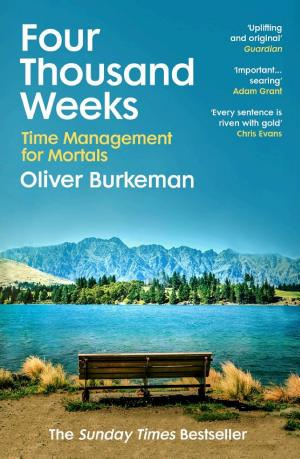
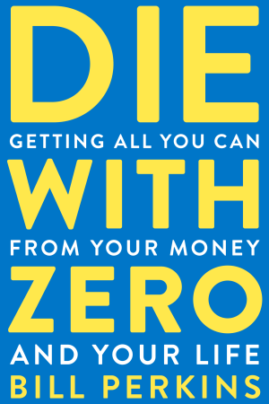
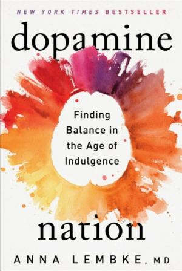

3.1 — Psicologia e Wellbeing
3.1.1 — Nominare per guarire
→ Apri come pagina indipendente — bibliografia + nav dedicata
Ludwig Wittgenstein apre il Tractatus Logico-Philosophicus con una delle frasi più celebri della filosofia: “Il Mondo è la totalità dei Fatti, non delle Cose.” Il mondo non è fatto di oggetti, ma di relazioni tra oggetti. Questa intuizione, vecchia di un secolo, è sorprendentemente attuale: il benessere non dipende da ciò che possediamo, ma da come nominiamo ciò che proviamo. Alcune parole esistono solo in alcune lingue, in alcuni Mondi: solo nelle uggiose e fredde serate olandesi si può davvero sentire la gezelligheid. I giapponesi hanno 別腹 (betsubara), lo “stomaco separato” riservato al dessert. Il Pensiero e il Linguaggio sono un'immagine del Mondo — e certe sfumature si perdono quando manca la parola per nominarle (💬 ff.134.1 Parole, parole, parole).
Il polpaccio come oracolo di longevità: una circonferenza sotto i 35 cm predice mortalità più alta negli anziani, sopra i 38.5 cm si associa a mortalità ridotta [58]. Una misura da sarto, in centimetri, diventa più predittiva di molti esami del sangue. Il motivo è sarcopenia: la massa muscolare post-65 è un buffer contro cadute, immobilità, infezioni. La sarcopenia uccide più silenziosamente del colesterolo, ma le linee guida sanitarie dedicano ancora l'80% dei check-up a lipidi e pressione. In 😊 ff.138.2 La strada più felice avevamo documentato il ruolo della quotidianità del movimento; qui lo stesso principio torna codificato come antropometria predittiva. Il leg day, nella terza età, è letteralmente vitale: non vanità, farmaco.
La neuroscienziata Lisa Feldman Barrett ha dimostrato che le emozioni non sono reazioni automatiche incise nel cervello, ma simulazioni che il cervello costruisce integrando segnali subconsci e viscerali — battito cardiaco, temperatura, segnali interocettivi. Dare un nome alle emozioni è fondamentale per superare i blocchi: prima di una gara o di un esame sale l'ansia, ma spesso è solo una sfumatura dell'eccitazione. Marc Brackett, fondatore del Centro per l'Intelligenza Emotiva a Yale, segue questa linea con Dealing with Feeling[1]. Il fondatore di Pinterest ha creato l'app How We Feel[2], un vero e proprio “Pokédex per le emozioni” (💬 ff.134.2 Dare un nome alle emozioni).
In un mondo dove il pensiero viene sempre più allocato a GPT, questo sentire-definire è ciò che ci resta. “Un’emozione puramente disincarnata è un non-ente”, scriveva William James nel 1884[3]. Il mondo digitale sta già cambiando il significato delle parole: “scalare” non evoca più montagne ma startup. Per resistere a questa disincarnazione dobbiamo ri-attaccarci al linguaggio come legame tra pensiero e mondo. Il video di Michaell McAfee per Max Cooper — I Am in a Church in Gravesend, Listening to Old Vinyl and Drinking Coffee[4] — è un fiume di parole che scaturisce da un’esperienza particolarissima: stare in una chiesa, ascoltare vinile, bere caffè. Nessun algoritmo lo avrebbe generato, perché nessun algoritmo ha un corpo che sente il freddo delle navate (🦴 ff.134.4 Umanità all’osso).
“Il Mondo è la totalità dei Fatti, non delle Cose.”
— Ludwig Wittgenstein, Tractatus Logico-Philosophicus, 1.1
Ma come si passa dal nominare le emozioni al viverle pienamente? Mihály Csíkszentmihályi ha dedicato trent'anni allo studio del flow — quello stato di totale immersione in un'attività che ci fa perdere il senso del sé e del tempo. Cosa lo favorisce? Il movimento fisico, il rischio, la complessità di un'attività (ma non troppa, la regola del 4%)[5], la novità, la mancanza di distrazioni. Il flow è stato misurato per la prima volta nei giocatori di scacchi, con un aumento di onde teta e attivazione del “sistema implicito”[6] (💫 ff.121.1 Le basi del flow). Oltre a renderci felici, il flow aumenta le performance con effetti socio-economici: secondo McKinsey, i manager nel flow sono cinque volte più produttivi. DARPA ha dimostrato che i cecchini militari acquisiscono il bersaglio due volte più velocemente. Roger Bannister, nel 1954, ruppe il muro dei 4 minuti nel miglio; dimostrata la fattibilità di qualcosa, un sacco di gente inizia a realizzarla. Questo “Effetto Bannister” dimostra che molti limiti sono psicologici, non fisici (💫 ff.121.2 Il flow ti mette le ali) (🔺 ff.122.4 Piramidi in 4 minuti?).
Secondo McKinsey, i manager nel flow sono cinque volte più produttivi. DARPA ha dimostrato che i cecchini militari acquisiscono il bersaglio due volte più velocemente. Roger Bannister, nel 1954, ruppe il muro dei 4 minuti nel miglio: dimostrata la fattibilità di qualcosa, un sacco di gente inizia a realizzarla.

 Acquista su Amazon
[13]
Acquista su Amazon
[13]
3.1.2 — Tempo e finitudine
→ Apri come pagina indipendente — bibliografia + nav dedicata
Oliver Burkeman, in Four Thousand Weeks, capovolge il problema: il tempo non va gestito, va accettato. Una vita media è di circa 4.000 settimane. L'ansia da produttività nasce dal tentativo di far entrare l'infinito nel finito. La soluzione non è fare di più, ma scegliere consapevolmente cosa non fare. Bill Perkins in Die with Zero[7] porta questa logica all'estremo: l'obiettivo non è accumulare ma spendere strategicamente in esperienze, massimizzando i “dividendi di esperienze” — ricordi che migliorano nel tempo (😱 ff.44 Che ansia!). Seth Godin, in The Dip, descrive ogni percorso professionale come una curva con tre possibili forme: il Dip (una valle che premia chi persevera), il Cul-de-Sac (un vicolo cieco da abbandonare subito) e il Cliff (una discesa che punisce la perseveranza cieca). La saggezza sta nel distinguere i tre (🏔 ff.137.1 Orografia di una discesa). Arthur Brooks, professore a Harvard e editorialista dell'Atlantic, studia le curve di produttività nel tempo: l'intelligenza fluida (problem-solving rapido) declina dopo i 40, ma l'intelligenza cristallizzata (saggezza, sintesi, insegnamento) cresce fino alla fine. Darwin era fluido; Bach era cristallizzato. La seconda metà della vita è una trasformazione, non un declino (💎 ff.137.3 Cristalli e Bach). Uno studio su Nature dimostra che ridurre l’uso di Twitter migliora il benessere[8]. Sahil Bloom usa la metafora del surfista[9]: il 90% del tempo lo passi senza cavalcare onde, remando e aspettando. Pazienza e posizione. E non devi cavalcarle tutte. Graham Duncan aggiunge la metafora del tempo: ogni ventenne è un miliardario[10]. Un milione di secondi equivale a 11 giorni; un miliardo a 31 anni. James Clear lo conferma: chi si concentra su un compito e lo porta a termine batte l’eterno ottimizzatore[11] che salta da uno strumento all’altro. Marco Aurelio, nei Pensieri, l’aveva già capito: ognuno vive solo questo breve istante, il presente (✏️ ff.67.4 Quattro riflessioni).
Eppure, nella corsa a riempire ogni minuto, si dimentica una domanda elementare: da quanto tempo sei vivo? Prendi gli anni, moltiplicali per 365 e poi per 24. Il risultato è un numero enorme di ore, eppure per molti la risposta a “cosa hai da mostrare?” resta desolante: partite di golf, anni in ufficio, pile di libri dimenticati e un garage pieno di giocattoli. Ryan Holiday, in The Daily Stoic, cita Raymond Chandler: “Soprattutto, ammazzo il tempo, ed è duro a morire.” La riflessione sulla noia e sulla necessità di ammazzare il tempo rivela che il problema non è averne troppo, ma non sapere come abitarlo (⌛ ff.8.7 Ammazzare il tempo).
Ma se il tempo sfugge alla comprensione, il denaro non è da meno. Tim Urban — già incontrato nel corpus per la sua capacità di rendere tangibile l’astratto — ha provato a visualizzare 241 trilioni di dollari, la somma del valore di tutti i soldi, tutte le azioni in borsa, tutte le costruzioni sulla Terra nel 2014. Come quantificarlo? In banconote da 100 dollari, otterremmo una pila alta quasi come la Luna. In oro, un blocco cubico di 63 metri di lato — meno di un isolato. In patate, un mega tubero che copre metà Long Island. E in pizza Domino’s? Copriremmo l’intera Nigeria — al tasso di 19 dollari per una pizza da 14 pollici. Fortunatamente pizze Domino’s così grandi non ci sono, specie dopo la chiusura in Italia. L’esercizio sembra frivolo, ma rivela una verità profonda sulla nostra incapacità di comprendere i grandi numeri: come il cervello non percepisce la differenza tra un milione e un miliardo, così non percepisce la differenza tra un patrimonio e una galassia di patrimoni. Se Graham Duncan ci dice che un milione di secondi sono 11 giorni e un miliardo sono 31 anni, Urban ci dice che 241 trilioni sono una pizza grande quanto la Nigeria. La finitudine del tempo e l’infinitudine del denaro sono due facce della stessa illusione cognitiva: crediamo di capire entrambi, ma non capiamo né l’uno né l’altro (🍕 ff.38.1 Convertire tutti i soldi del mondo in pizza).
E se il tempo finisce, le frasi restano a metà. Il Washington Post ha presentato un progetto con una serie di frasi interrotte — non intendeva mostrare ogni dettaglio del problema, ma chiederci di fermarci per leggere qualche storia. La pagina iniziale si presenta così: frasi troncate a metà. Non sappiamo come terminino. Le interruzioni sono forse una delle cose che mentalmente facciamo più fatica a gestire: il nostro cervello è una macchina di predizioni, cerca sempre di anticipare quello che succederà. Solo passando col mouse sopra la frase, scopriamo come sarebbe stata completata — se la persona in questione non fosse morta, se la frase della sua vita non fosse stata colonizzata da un virus che si è diffuso in ogni angolo del pianeta. Nessun futurismo, solo la richiesta di fermarci un attimo per ricordare quello che è stato il momento più nefasto del ventunesimo secolo. Se Burkeman ci chiede di fissare un quadro per tre ore, il Washington Post ci chiede di leggere una frase interrotta per trenta secondi: il risultato emotivo è lo stesso. L’incompletezza è più potente della conclusione, perché obbliga il cervello a immaginare ciò che manca — e ciò che manca è sempre una vita (💬 ff.27.3 Le frasi interrotte del Washington Post).
C’è però un dato che ribalta la malinconia del tempo perduto. Un sondaggio YouGov rivela che ogni fascia d’età considera i propri anni attuali come i migliori. Il 52% delle donne e il 39% degli uomini colloca il meglio dopo i trenta. Non si tratta di ottimismo ingenuo, ma di un meccanismo più profondo: chi sopravvive a un decennio tende a rivalutarlo, e chi lo sta vivendo non ha ancora accumulato abbastanza rimpianti per sminuirlo (📊 note 1279 YouGov: gli anni migliori).
Burkeman non si limita alla teoria: porta un esempio che è anche un esercizio. Jennifer Roberts, insegnante di storia dell'arte ad Harvard, assegna ogni anno ai suoi studenti un compito radicale: fissare un quadro per tre ore[12]. Non analizzarlo, non descriverlo: guardarlo. Il messaggio è che la continua ricerca di nuovi stimoli e l'ottimizzazione compulsiva del tempo sono modi per sottrarci all'ansia dello stare fermi — per non pensare alla nostra essenza, alla nostra finitudine, alla nostra mortalità. Certe forme d'arte impongono vincoli temporali al pubblico in modo piuttosto ovvio: un'esibizione dal vivo de Le nozze di Figaro o una proiezione di Lawrence d'Arabia non lasciano altra scelta che dedicare all'opera il proprio tempo. Eppure sempre più spesso capita il contrario: lasciare un film a metà, catturati dall'ansia di fare altro, promettendosi “lo finirò dopo” — un “dopo” che non arriva mai (🖼 ff.44.4 Sprecare 3 ore davanti a un quadro).


Ma “morire con zero” non è solo una provocazione. Bill Perkins svela tre inefficienze concrete nella gestione delle nostre finanze che quasi nessuno contesta. L’eredità: i figli la ricevono a 60 anni, quando sono già sistemati economicamente. Sarebbe meglio aiutarli tra i 25 e i 35, quando possono usarla per casa, impresa, famiglia o esperienze. La salute: in caso di malattie importanti, i risparmi non possono coprire le ingenti spese mediche (specie in America); meglio una buona assicurazione sanitaria. La pensione: le nostre stime di anni di vita post-lavorativa sono grossolane; meglio le rendite vitalizie[14]. Tre cassetti finanziari che la maggior parte delle persone riempie nel modo sbagliato, e svuota troppo tardi (🛡 ff.111.3 Figli, salute e anni sprecati; 🍊 ff.111.1 Una vita da spremere).
Brooks, però, non si limita alla teoria delle due intelligenze: in un celebre articolo sul The Atlantic del 2019[15] scava nella depressione che colpisce chi ha raggiunto la vetta. Lo chiama principle of psychoprofessional gravitation: più si arriva in alto, più è dura andarsene. Atleti olimpici in forma straordinaria che non sanno chi essere senza la medaglia. Attori che guadagnano un milione per episodio e scivolano nel vuoto tra una stagione e l'altra. Ex Youtuber dimenticati dall'algoritmo che li aveva creati. Brooks porta il suo personale esempio musicale: un giorno ti svegli e non suoni più il corno francese con la stessa fluidità. Non solo: rimanere al livello raggiunto è sempre più difficile. Si invecchia, vince l'entropia. Il parallelo sociale è altrettanto impietoso: sempre più giovani scelgono tra lavori manuali o ‘all-in’ digitali abbandonando l'università, come se la generazione successiva avesse già capito che la scala lineare promessa dai boomer — studia, lavora, cresci, pensionati — non funziona più. Il picco non è il problema; il problema è credere che dopo il picco non resti nulla (🏆 ff.137.2 Picchi entropici).
La metafora dei cristalli di Brooks si estende oltre la psicologia: i cristalli, a livello chimico-fisico, sono un esempio di stabilità contro il caos entropico — tanto più preziosi quanto più accumulano “storia”. Il compound interest è tangibilissimo in finanza, come nel conto in banca di Warren Buffett, i cui rendimenti più significativi sono arrivati dopo i sessant’anni. Ma in ogni ambito serve essere “storici della propria vita”: accumulare per anni buone abitudini — attività sportiva, una dieta sana — dev’essere percepito come una crescita continua, non come una rinuncia. Il corto Hag di Anna Ginsburg[44] rivaluta l’estetica del post-picco nelle donne, oltre lo stereotipo della “befana”: la seconda metà della vita non è declino, è compound — di saggezza, di relazioni, di salute guadagnata (📈 ff.137.4 Filosofia dell’accumulo).
Ma c’è un prezzo nascosto all’accumulo: il limite che si sposta più velocemente di quanto lo si avvicina. Chiudere una maratona in 2 ore e 45 minuti — a 3,54 min/km — significa stare dentro il 2-3% di chi porta a casa la distanza sotto le 3 ore. Una sotto-popolazione già piccolissima. A livello sportivo, uno potrebbe sentirsi arrivato. E invece, condividendo il risultato sui social, la reazione tipica è diventata: “la prossima quindi? 2 ore e 30?”. L’ansia moderna non nasce dal fallimento: nasce dalla paranoia del non-essere-mai-abbastanza, che algoritmi e feed reiterano quotidianamente. Ogni picco raggiunto diventa una baseline, ogni baseline nuova diventa insufficiente. È lo stesso meccanismo che, sul piano cristallizzato (🏆 ff.137.2 Picchi entropici), distrugge gli atleti olimpici dopo la medaglia: l’asticella sale più veloce del corpo (☝️ ff.68.3 Non c’è limite al meglio (o al peggio?)).
E la corsa all’asticella ha un costo temporale che va oltre le ore perse in un feed. [51]: non per lo screen time in senso stretto, ma perché sono ingegnerizzati per accelerare il tempo soggettivo dell’utente. L’argomento si incastra perfettamente con la distinzione di William James tra tempo prospettico e retrospettivo (⏱ ff.65.2 Una vita in vacanza): uno scroll di 30 minuti, denso di stimoli omogenei, sembra breve mentre passa e breve in retrospettiva. La doppia compressione produce un furto silenzioso di memoria. Chi passa quattro ore al giorno sui social non perde solo quattro ore: perde la capacità di ricordare di averle vissute. Se la longevità soggettiva è fatta di eventi distinti, il feed omogeneizza l’esistenza fino a renderla quasi invisibile al ricordo. La dipendenza digitale è il primo dispositivo di accorciamento della vita compatibile con l’assenza di malattia.
E c’è chi pensa la stessa accelerazione, ma dalla parte delle macchine. Daniel [52]: l’analogia che propone è vertiginosa — vivere 500 anni di storia in 5 anni percepiti, l’Inghilterra dal 1520 al 2020 compressa in un lustro. Se il tempo soggettivo umano si può comprimere con un feed, il tempo oggettivo dei sistemi artificiali si può già dilatare con l’inference. La domanda diventa insolita: cosa significa “vivere” in un mondo dove la maggior parte del pensiero avviene a velocità 100x la nostra? Chi decide cosa è interessante, cosa si ricorda, cosa vale la pena esperire? Il capitolo sulla singolarità gentile (🕳️ ff.129.1 La singolarità gentile di Altman) resta il quadro, ma qui è la psicologia a pagare il conto: se la macchina vive 500 anni a 5, l’umano rischia di vivere 5 anni a 500 — ovvero un presente eternamente accelerato e svuotato.
Accumulare buone abitudini, però, non basta: serve verificare periodicamente la rotta. In una bella analogia, Greg McKeown — autore di Essentialism — fa notare che un aereo è fuori rotta il 99% del tempo. Ma è un sistema dinamicamente stabile: con piccoli aggiustamenti continui, arriva a destinazione. Così, diario alla mano, ogni domenica Greg fa un check sulle azioni compiute nella settimana, verificando se siano in linea con le sue relazioni e i suoi valori. Contro l’ennesimo trend proposto dalla società — qualcuno ha detto padel? — serve una consapevolezza: la necessità incessante di controllare la mappa e tornare sul proprio percorso. Non serve il pilota automatico perfetto; servono correzioni frequenti e oneste (🧭 ff.89.4 Continui riaggiustamenti).
L'intelligenza fluida declina dopo i 40, ma l'intelligenza cristallizzata cresce fino alla fine. Darwin era fluido; Bach era cristallizzato. Il picco non è il problema; il problema è credere che dopo il picco non resti nulla.
Il tempo, però, non è un metro rigido: si piega a seconda di come lo riempiamo. La differenza tra il tempo prospettico e quello retrospettivo[16] spiega il perché. Come scriveva William James nei Principles of Psychology del 1890: un periodo riempito di esperienze diverse e interessanti sembra breve mentre passa, ma lungo guardando indietro. D'altro canto, un tratto di tempo privo di esperienze sembra lungo mentre passa, ma in retrospettiva breve. L'attesa di un aereo in ritardo di cinque ore può essere percepita più lunga di tutta una settimana in Grecia, mentre una giornata ad Atene vola. Una settimana dopo il ritorno, però, l'attesa in aeroporto è un brevissimo attimo, mentre il divertimento della vacanza si dilata incredibilmente. Dean Buonomano, in Your Brain is a Time Machine, approfondisce questo paradosso della percezione temporale (⏱ ff.65.2 Una vita in vacanza).
Ma perché il tempo accelera con l’età? Una teoria suggerisce che il tempo non sia un numero assoluto di secondi, ma sia scandito dalla quantità di variazione tra un prima e un dopo. Un esperimento lo dimostra: un cerchio mostrato per 500 millisecondi è percepito più breve se il cerchio si allarga o si restringe[42]. Il cervello, di fronte al cambiamento, “comprime” la durata percepita. Invecchiando, gli elementi di novità sono sempre minori, avendo accumulato ricordi ed esperienze. Senza novità, il tempo sembra più veloce. La prescrizione è semplice: nuove esperienze dilatano il tempo — non come illusione, ma come architettura percettiva (🆕 ff.65.1 Tempo = nuove esperienze?). E il tempo non è solo percezione cerebrale: è anche una questione di cuore. Murakami, in Kafka sulla spiaggia, scrive che il tempo si espande o si blocca in accordo con i movimenti del cuore. I ricercatori della Royal Holloway University di Londra gli danno ragione: hanno dimostrato che un rumore è percepito più o meno lungo a seconda che cada durante una sistole o una diastole[43]. Durante la sistole il cervello riceve un maggior numero di input interni, costruendo la percezione di un tempo più denso. Il corpo, ancora una volta, è il primo strumento di misura — e il cuore il metronomo più antico (❤️ ff.65.4 Una questione di cuore?). L’analogico, del resto, era più semplice. Da piccolo si comprava un CD — al prezzo di un mese di Spotify — e lo si spremeva per mesi in macchina. Si era abbonati a Internazionale, che si leggeva senza distrazioni da capo a coda. Oggi è difficile ascoltare anche una sola volta un intero album su Spotify. A meno che l’artista, come Mike Posner, non lo chieda esplicitamente in Introduction. A Real Good Kid funziona come le tragedie greche: dà voce alle sofferenze di chi la società e i social fanno percepire come eroi invincibili — tra esse, il dramma di Avicii, caro amico dell’artista. Ascoltare un album intero è un atto di resistenza: rallenta il tempo, come le fibre rallentano la glicemia (💿 ff.72.2 Ascoltare un CD).
Come argomentato in ff.65.2, il tempo è un oggetto a due velocità (prospettico, retrospettivo); e come in ff.65.4 il cuore lo scandisce in sistole e diastole. Ma il cervello che gestisce questa partitura non è un Rolex: è un coltellino svizzero. Dean Buonomano, in Your Brain is a Time Machine[57], ricostruisce come lo stesso organo debba tenere insieme scale temporali enormemente diverse: millisecondi per isolare i fonemi nel suono, ore per il ritmo circadiano, fino alle stagioni per regolare l’organismo. Una sola macchina, mille orologi. Perché è nato il tempo, allora? La risposta di Buonomano è disarmante: forse per cantare. Per parlare. Per discriminare fra un fonema e l’altro dentro la stessa frazione di secondo. Quando il tempo cerebrale si incrina anche solo un po’, l’interpretazione salta: in Purple Haze di Jimi Hendrix il famoso “excuse me while I kiss the sky” diventa, nell’ascolto collettivo, “excuse me while I kiss this guy”. Un mondegreen, una sillaba mal tagliata, e la canzone cambia di genere. Se il cervello gestisce il tempo come un coltellino, ogni nostra percezione — del ritmo, dell’attesa, perfino della dolcezza di una frase — dipende dalla lama giusta. La coerenza con il discorso sul compound interest di ff.137.4 è diretta: anche la saggezza è un’operazione temporale — accumulare fonemi di vita nel verso giusto, senza mondegreen (🧠 ff.65.5 O di cervello?).
3.1.3 — Attenzione e stimolo
→ Apri come pagina indipendente — bibliografia + nav dedicata
L'ansia moderna ha una dimensione quantitativa: il tempo accettabile per il caricamento di una pagina web è sceso da 4 a 2 secondi in tre anni. Misuriamo tutto — dal sonno alle calorie — e scambiamo il tracking per controllo. Ma il corpus avverte che il problema non è solo la velocità: è la qualità dello stimolo. Huxley, più di Orwell, aveva previsto una società che si auto-anestetizza con intrattenimento continuo: oggi il mix notifiche + feed + dopamina comportamentale[17] funziona come una spezia quotidiana che riduce profondità attentiva e aumenta reattività emotiva — Anna Lembke, in L'era della dopamina, paragona lo smartphone a una “siringa ipodermica moderna” che somministra stimoli 24/7 (🌎 ff.118.1 Il Mondo Nuovo). La nota su Paprika estremizza questa diagnosi: non siamo davanti a un unico schermo invasivo, ma a piani di realtà sovrapposti che convivono senza gerarchia, come se il quotidiano fosse diventato un grattacielo semiotico dove sogno, feed, lavoro e intrattenimento competono nello stesso corridoio cognitivo (🌶️ ff.118.2 Paprika - Sognando un sogno パプリカ (2006)). Se questa è la malattia, la cura proposta non è ascetica ma concreta: albero, noia, silenzio, corpo in movimento senza ossessione prestativa. Non correre per il badge, ma per abbassare il rumore di fondo e recuperare continuità percettiva (🌳 ff.118.3 La cura: albero e silenzi?). In parallelo, le note su Hong Kong e Shenzhen descrivono un contesto dove la linearità newtoniana collassa: giornate da Oscar, tagli narrative da Inception, spazio-tempo sociale compresso come un file .zip. Non è solo estetica cyberpunk: è una metrica esperienziale del presente iperconnesso, in cui tutto accade insieme e la mente fatica a costruire priorità (🏆 ff.117.1 Giornate da Oscar; 🍩 ff.117.2 Ciambelle atomiche). La conseguenza politica di questa compressione è sottile ma concreta: quando percepisci tutto come urgente, diventa quasi impossibile distinguere ciò che è importante; e senza gerarchie, anche la libertà di scelta si trasforma in una forma elegante di saturazione. Naval Ravikant propone la stessa cura in negativo: meno ego e controllo, più flow e presente. Tradotto in pratica: meno compulsione da aggiornamento, più continuità mentale. Un trial controllato su Nature conferma che la mindfulness autosomministrata riduce lo stress in modo significativo[18].
Il paradosso della misurazione è che più controlliamo, più ci facciamo male. Sonno, calorie, glicemia, HRV, passi, follower: la lista cresce ogni anno. Al contempo, una catena di rinunce — alcol, tabacco, zuccheri aggiunti, aspartame, cellulare dopo le 22, caffè dopo le 17, cibo tre ore prima di dormire. Come cantano i Pinguini Tattici Nucleari: “Io ci provo a capirti e non capisco un cazzo.” Eppure definire limiti assoluti ha un effetto deleterio: un paper su MedRxiv mostra l’effetto deleterio delle soglie assolute in medicina[45] per l’assegnazione delle terapie — in mancanza di crescita costante, la sensazione di fallimento porta all’abbandono delle buone pratiche. Bryan Johnson (💊 ff.49.4 Il superuomo che prende 100 pillole al giorno) ribatte con una visione meno ego-centrica: stiamo semplicemente evolvendo, come società e come individui aumentati da AI e algoritmi. Il bivio è chiaro: diventare Super Sapiens (💪 ff.35 Sto bene, sono Super Sapiens) o accontentarsi di capelli mori e pancetta (📏 ff.68.2 Sempre più misurati e controllati).
Ma prima di ottimizzare il corpo o la mente, vale la pena chiedersi: come ci si sente, dentro una rivoluzione? Quando l’efficienza del lavoro più pagato al mondo migliora del 50%[46] dal giorno alla notte e vi è crescente convergenza tra AI e altre tecnologie[47] — come documenta il report annuale di ARK Invest — forse ci siamo vicini. La ghigliottina: con la macchina a vapore abbiamo delegato l’attività fisica; ora affidiamo attività mentali e ricordi al digitale. Come un contadino del Settecento per il quale l’attività fisica era tutto e un trattore inimmaginabile, se l’AI ci toglierà le facoltà mentali, quale dimensione umana scopriremo? Palestre e Ironman stimolano il fisico sedentario di gran parte dei lavoratori: nessun feudatario si sarebbe sognato di fare un ultra-trail o un everesting. Allo stesso modo, mindfulness e meditazione — non a caso già in crescita — potrebbero diventare sempre più importanti. Forse l’uomo ripiegherà sull’irriducibile: la sua coscienza. Però non diamo per scontata nemmeno quella, dato che i computer già ricostruiscono quello che stiamo vedendo[48] (⚽ ff.55.1 Come ci si sente, dentro una rivoluzione?).
Naval porta la stessa logica anche alla lettura. Troppi libri? Sì, decisamente troppi — e troppo superficiali. Si arriva a leggere decine di manuali di finanza personale senza mai aver sfogliato La ricchezza delle nazioni di Adam Smith. La provocazione è netta: se la biblioteca di Alessandria avesse solo cento libri, quali sceglieresti? Illacertus su X rilancia l'idea: selezionare cento libri e comprenderli a fondo[19], anziché accumulare titoli come trofei. È il ritorno ai classici come antidoto alla dispersione: meno volumi, più profondità — la stessa cura che Naval prescrive per l'ego e il rumore mentale, applicata allo scaffale (📚 ff.72.3 Se la biblioteca di Alessandria avesse 100 libri).
E tra i cento libri, uno meriterebbe un posto per forza: Master of Change di Brad Stulberg[41]. Il concetto del fiume di Eraclito viene espanso: le molecole d’acqua non si troveranno mai più nello stesso punto, e anche le sponde del fiume sono erose in continuo divenire. Ma l’argine rimane tendenzialmente quello. Allo stesso modo, dobbiamo fissare un numero limitato di valori — da 3 a 5 — su cui basare una dinamica resistenza al cambiamento. Dobbiamo avere più facce, più interessi indipendenti. A seconda delle “stagioni” o delle “precipitazioni” di un certo periodo, li attiveremo come fossero ruscelli. Identificandoci con quello in cui crediamo, più che con quello che possediamo, siamo meno fragili rispetto agli eventi esterni — che ci possono togliere relazioni, salute, soldi. La lettura, come la meditazione, può essere psicoterapia (📚 ff.78.4 Leggere, leggeri).
Ma dove finiscono, poi, tutte queste informazioni che accumuliamo senza leggere davvero? In un libro del 1989, Dove gli angeli esitano, Catherine e Gregory Bateson riportano la storia di una madre anziana, forse affetta da Alzheimer, che interrompe una discussione tra il figlio e i suoi amici “cibernetici” con una frase fulminante: “Voi che parlate di reperimento delle informazioni, ma che ne sapete di queste cose? Io sì che me ne intendo, perché ho perso la memoria. L’unico sistema che ho per trovare le cose è di tenere un pochino di ogni cosa dappertutto.” Backup. L’uomo moderno, sempre più smemorato, funziona esattamente così: lascia un po’ di informazioni in ogni angolo — su un database Notion accessibile da cellulare e PC, in fredde newsletter di URL, tra le note di un’app dimenticata — senza dover ricordare nemmeno dove le abbia lasciate. La madre di Bateson, nella sua fragilità, aveva intuito per necessità quel principio di backup distribuito che l’uomo digitale pratica per pigrizia (🔗 ff.64.3 Solo link che connettono informazioni?; ♾️ ff.72.1 Infinito digitale).
Qui il corpus insiste su una distinzione utile: benessere non significa ottimizzare tutto, ma scegliere cosa lasciare fuori. Le note su flow, noia e attenzione convergono su una pratica minima ma robusta: ridurre rumore, aumentare continuità, proteggere blocchi di lavoro profondo (💫 ff.121.1 Le basi del flow; 😱 ff.44 Che ansia!). Meno stimoli non è rinuncia: è banda mentale restituita. Il mercato del well-being da 1.500 miliardi lo conferma: la salute — fisica, mentale, del sonno — è la nuova economia (📈 ff.35.1 Le proiezioni del mercato del well-being; 💤 ff.35.4 Super-dormita e super-focus).
La coscienza, in fondo, è scegliere su cosa focalizzare la nostra (sempre più bombardata) attenzione. Alexandra Horowitz lo definisce con precisione: “L’attenzione è un discriminante intenzionale e impenitente. È un continuo chiedere cosa sia importante in questo preciso momento per registrare solo quello.” Trasformers? Proprio l’attenzione è un altro carattere comune tra AI e mente umana. ChatGPT è un trasformer, proposto per la prima volta nel famoso paper Attention is all you need. L’architettura che alimenta ogni modello linguistico moderno nasce da un’unica intuizione: la capacità di decidere cosa è rilevante in un flusso di dati. Il cervello umano fa lo stesso, ogni secondo, con miliardi di stimoli sensoriali. La differenza? Noi ci stanchiamo. Il trasformer, no (⚠️ ff.83.2 Stai attento!).
Ma siamo davvero incapaci di concentrarci, o abbiamo solo cambiato oggetto? Lo storico Daniel Immerwahr, in un podcast con Adam Grant, smonta il mito della crisi dell'attenzione con due osservazioni chirurgiche: nell'Ottocento erano i libri a essere accusati di distrarre — gli stessi libri che oggi veneriamo come simbolo di profondità. E i videogiochi, demonizzati al pari dei TikTok da quindici secondi, generano flow, non distrazione: chi li gioca perde ore nella loro immersività, esattamente come un lettore vittoriano perdeva pomeriggi interi in un romanzo a puntate. La vera domanda non è quanto ci concentriamo, ma su cosa — e il panico morale di ogni generazione proietta sui nuovi media le ansie che non riesce a nominare (🎯 ff.132.1 Crisi dell'attenzione?). Se l'attenzione non è in crisi ma in migrazione, il disagio più profondo sta altrove. Dalla ff.44 “Che ansia!” al 2025, l'angoscia cresce insieme ai mondi generativi paralleli ai social classici. Il paragone storico è illuminante: nel Settecento ci si allenava vent'anni per arare campi, poi arrivò la rivoluzione industriale a rendere obsoleta quella fatica fisica. Oggi accade lo stesso con il cervello. Il 60% dei laureati di Harvard finisce in consulenza, finanza o Big Tech — quello che Rutger Bregman chiama il “Triangolo delle Bermuda del talento”: intelligenze brillanti assorbite da settori che ottimizzano metriche, non significato. Il risultato è una generazione che si sente inutile non perché non sa fare nulla, ma perché le macchine fanno le stesse cose più in fretta (😰 ff.141.1 Sentirsi inutili nell'era AI).
Il 60% dei laureati di Harvard finisce in consulenza, finanza o Big Tech — quello che Rutger Bregman chiama il “Triangolo delle Bermuda del talento”: intelligenze brillanti assorbite da settori che ottimizzano metriche, non significato. Il risultato è una generazione che si sente inutile non perché non sa fare nulla, ma perché le macchine fanno le stesse cose più in fretta.
Eppure, in mezzo a questa inutilità percepita, qualcosa non torna. Packy McCormick, nella newsletter Not Boring[33], fa notare un paradosso: l’AGI è alle porte, mandiamo in orbita razzi sempre più grandi, riprogrammiamo le cellule T per combattere i tumori[34] — eppure intorno a noi c’è solo paura e negatività. La ricerca spaziale è vista come passatempo per miliardari, le centrali nucleari chiudono, i progressi nell’AI suscitano timori di perdita di lavoro. Lo show più discusso in TV — The Last of Us — si svolge in un mondo dove il cambiamento climatico ha alimentato un patogeno che trasforma gli umani in zombie. Il sempre brillante Balaji Srinivasan, nel pieno della pandemia, pubblica The Purpose of Technology[35]: un inno alla positività che auspica scienziati creativi, attenti alla divulgazione, progressivi. Delle vere e proprie star. Srinivasan va oltre: serve costruire un ecosistema mediatico decentralizzato, guidato dalla tecnologia — non tweet, ma articoli; non articoli, ma video; non video, ma lungometraggi. “Una vita intera di contenuti che sostengono la moneta immutabile, la frontiera infinita, l’intelligenza artificiale e la vita eterna.” Anche Imran Chaudhri, cuore del design dietro l’iPhone[36], condivide la stessa visione: i giovani hanno bisogno di inneggiare al Maradona della tecnologia, della positività. Neil deGrasse Tyson non basta. Il senso di futuro fortissimo è esattamente questo: stimolare, divulgare, preparare la società al futuro — il future-forming[37] — un ottimismo fondato sui dati, non sulla retorica (➕ ff.59.3 L’importanza di raccontare storie positive).
In questo vuoto di senso, il capitalismo tenta la sua prossima mutazione. Packy McCormick, su Not Boring, argomenta che le criptovalute e i contratti digitali potrebbero essere la prossima fase di efficientamento del sistema capitalistico[20]. Molecule finanzia la ricerca scientifica attraverso IP-NFTs[21], compensando algoritmicamente chi contribuisce in termini economici o intellettuali. È la promessa di un'economia dove il valore è tracciabile e il merito distribuito dalla blockchain, non dai comitati. Eppure la distanza tra la promessa e la realtà è la stessa che separa un Monna Lisa in versione Majin Buu dal capolavoro originale: la tecnologia può replicare la forma, ma il significato resta una questione umana (🤑 ff.73.6 Una nuova fase per il capitalismo).
Al di là degli algoritmi e degli stimoli digitali, c’è chi cerca l’alterazione percettiva per vie più antiche. Dopo l’ennesima decriminalizzazione — questa volta a Seattle — la psichedelia è tornata al centro del dibattito, non per nostalgia di Woodstock ma per i possibili effetti terapeutici di sostanze come la psilocibina. Le menzioni scientifiche della parola sono aumentate in modo esponenziale, con un picco che ricorda quello del 1968. Lo stato della ricerca suggerisce applicazioni concrete contro depressione resistente e disturbo post-traumatico: non ricreazione, ma cura (🍄 ff.2.5 Psichedelia portami via).
Nathaniel Drew, videomaker dal talento registico raro su YouTube, ha documentato il proprio viaggio psichedelico in Olanda con una sincerità disarmante. La citazione che apre il racconto è di Pierre Teilhard De Chardin: “Noi non siamo esseri umani che vivono un’esperienza spirituale. Noi siamo esseri spirituali che vivono un’esperienza umana.” La cinematografia del video eleva il racconto personale a riflessione esistenziale, dimostrando che il confine tra introspezione e arte è sottile quanto quello tra coscienza ordinaria e stato alterato (🍄 ff.2.6 Psichedelia portami via (parte 2)).
Un caso emblematico di come gli algoritmi si siano integrati nella costruzione dell'identità è Spotify Wrapped — il riassunto annuale che la piattaforma confeziona per ogni utente. La nostra passione collettiva per questo report rivela, come ha scritto Kelly Pau su Vox[22], fino a che punto gli algoritmi si siano integrati nel modo in cui concepiamo noi stessi nella cultura del consumo digitale: come marchi da perfezionare. La musica è un'azione intima, legata agli stati d'animo e alle appartenenze sociali; eppure il gesto di condividere il proprio Wrapped sui social trasforma l'ascolto privato in performance pubblica. Scelte di podcast, playlist e generi musicali — insieme a localizzazione e targetizzazione — possono dire molto di chi siamo e quale stato emotivo ci rappresenta in quel momento. Il dettaglio più rivelatore? Nonostante la spinta verso la gender neutrality, per iscriversi a Spotify serve ancora comunicare il sesso, che viene usato come parametro di controllo degli algoritmi: la frequenza di salto delle canzoni varia con il genere[23]. Wrapped diventa virale non perché è utile, ma perché conferma l'illusione che un algoritmo ci conosca meglio di noi stessi — e il brivido di essere letti è più forte del disagio di essere tracciati (🎵 ff.7.5 Spotify Wrapped).
Dagli algoritmi che leggono i nostri gusti musicali ai chip che leggono i nostri pensieri, il passo è più breve di quanto sembri. Azeem Azhar nel libro Exponential discute la voragine che si sta aprendo tra regolamentazione e tecnologia. I chip neurali aggiungono carne al fuoco alimentato da AI, social, robotica e clima. Nita Farahany, professoressa emerita alla Duke University, solleva tre nodi cruciali: raccolta crescente di dati cerebrali (1 miliardo di dollari di investimenti), possibilità di monitoraggio e modifica dei pensieri (come il psicoreato di Orwell in 1984), e necessità urgente di aprire una discussione sulla privacy mentale. Se Spotify sa cosa ascoltiamo e Wrapped lo trasforma in identità, chi proteggerà ciò che pensiamo quando un chip lo registra? (👮 ff.75.4 Polizia mentale).

3.1.4 — Noia, silenzio e routine
→ Apri come pagina indipendente — bibliografia + nav dedicata
La noia presuppone il silenzio, e il silenzio è la risorsa più scarsa dell'era digitale. Lo smartphone genera notifiche continue: ogni interruzione frammenta l'attenzione e amplifica la percezione di stress. Hans Selye, il pioniere della ricerca sullo stress, osservò che uno stesso stressor può rafforzare o spezzare a seconda dello scopo che la persona attribuisce all'esperienza. L'epidemia di stress non è metaforica: è endocrinologica (😤 ff.90 L'epidemia di stress). Le parole, a volte, finiscono: ci sono esperienze che trascendono il linguaggio, momenti in cui l'unica risposta adeguata è il silenzio. Restare senza parole non è un fallimento: è il riconoscimento che la realtà è più vasta del vocabolario (😶 ff.41 Non ho parole). Byung-Chul Han, in Vita Contemplativa, sostiene che l'inattività costituisce l'essere umano, distinguendolo dalle macchine — una vita senza pause si deteriora in pura sopravvivenza. Bryan Johnson, fondatore di Braintree e primo classificato alle Olimpiadi del Ringiovanimento[24], propone il metodo Blueprint per rallentare l'invecchiamento[25] con dieta a restrizione calorica del 24% e 100+ pillole al giorno (💊 ff.49.4 Il superuomo che prende 100 pillole al giorno). Sahil Bloom sintetizza: la noia della routine è una tassa per il successo a lungo termine. Ma la routine è per forza noiosa? La stimolazione trans-craniale promette soluzioni meno invasive: dispositivi come Somnee alterano la distribuzione delle onde neurali verso quelle associate al riposo, offrendo un'alternativa alla melatonina (⚡ ff.75 Massaggi al cervello). Wim Wenders, in Perfect Days, offre la risposta opposta: un addetto alle pulizie di Tokyo che trova la perfezione nella ripetizione silenziosa (🕒 ff.108.1 Quale è il vostro Perfect Day?). Ma a volte servono occhi nuovi, non solo silenzio. Il viaggio non è turismo: è ricalibrazione cognitiva. Quando l’infrastruttura scompare — niente Wi-Fi, niente Deliveroo, niente acqua dal rubinetto — emergono i presupposti biologici che il comfort occidentale rende invisibili: aria, acqua, sole. Il confronto con l’India forza una revisione delle priorità: la nostra ansia per il segnale 5G si ridimensiona davanti a chi combatte per l’acqua potabile. Non è idealizzazione della povertà: è la scoperta che il nostro senso di urgenza è quasi interamente costruito (🌎 ff.142.2 Il viaggio come ricalibrazione).
Il lockdown è stato un’eccellente scuola di silenzio forzato, e ha lasciato un’eredità filosofica meno raccontata della sua eredità epidemiologica. Bruno Latour, in Down to Earth, sostiene che la clausura domestica ci ha trasformati in uno scarafaggio — come Gregor Samsa nella Metamorfosi di Kafka — non perché ci abbia costretto tra quattro mura, ma perché ha confermato mentalmente la nostra materialità. Il progetto moderno, da Galileo a Musk, spingeva verso l’alto: razzi, spazio, trascendenza dalla Terra. Il lockdown ha ribaltato la rotta: ritorno al suolo, al corpo, al respiro di una stanza. “Stiamo iniziando a renderci conto che non abbiamo, che non avremo mai, che nessuno ha mai avuto l’esperienza di incontrare cose inerti”. L’inerzia era un’illusione. Il reset di Huffington (🧶 ff.109.3 Sbrigliare un gomitolo in un minuto) dura 60 secondi; il reset di Latour è durato due anni e ha riscritto il rapporto tra Occidente e materia. Non è un caso che i trend del post-pandemia — camminata, scalata, giardinaggio urbano — siano tutti verso il basso, non verso l’alto (🐛 ff.76.4 Trasformati in uno scarafaggio?).
E dieci anni di diario personale possono diventare un podcast in un pomeriggio. NotebookLM di Google permette oggi di convertire un archivio testuale decennale in una puntata di podcast conversazionale — due voci AI che commentano, con un minimo di ironia, ciò che si è annotato per anni. L’esperienza è spiazzante: sentire due “persone” estratte dai propri pensieri parlare delle proprie piccole preoccupazioni produce un effetto straniante, paragonabile a rileggersi in terza persona. Il diario — strumento introspettivo per eccellenza — diventa oggetto esterno manipolabile, non più solo ricordo ma artefatto narrativo. Il passo successivo è ovvio: generare un film della propria vita. Se la capacità di trascendere il sé passa dall’indebolimento dell’ego (🌿 ff.68.4 Meno ego e controllo, più flow e presente), sentire la propria storia raccontata da una macchina è il primo esercizio spirituale compatibile con l’AI. Non per celebrarsi: per distanziarsi (🏋 ff.112.3 Possiamo solo prepararci al meglio).
E prima del pathos, c’è la scrittura a mano. Scrivere invece di dettare, scrivere invece di farsi generare i paragrafi da ChatGPT: è il corrispettivo mentale dell’andare a fare la spesa a piedi o prendere le scale invece dell’ascensore, una rivendicazione di umanità apparentemente inefficiente. Italo Calvino, nella lezione del 1967 Cibernetica e fantasmi, anticipava di mezzo secolo la questione: la macchina — teoricamente — può permutare gli 1 e gli 0 fino a generare tutto lo scibile umano, inclusa la letteratura. La sfida dell’Oulipo, di cui Calvino fu membro, era proprio spingere la combinatoria al limite per vedere dove iniziasse il fantasma, l’inaspettato, la poesia. Oggi ChatGPT permuta su scala industriale, e lascia una traccia stilistica così riconoscibile che ha generato un anti-brand: [53]. La trattino lungo è diventata l’impronta digitale dell’AI — come l’em-dash a fine paragrafo, come gli elenchi puntati compulsivi, come certe transizioni retoriche (“Non solo X, ma Y”) che nessun umano userebbe con quella frequenza. Se Calvino diceva che lo scrittore combina simboli stando “sulle spalle dei giganti”, oggi i giganti sono modelli statistici che tendono al centro: e l’umanità si riconosce dal rumore stilistico residuo, dai tic, dagli errori. Scrivere a mano, in questa cornice, non è nostalgia: è una dichiarazione di provenienza (👻 ff.146.2 Fantasmi e Calvino).
C’è una forma di resistenza all’AI che non passa dal controllo ma dal dolore. Gillian Rose ha scritto Love’s Work nel 1995 mentre moriva di cancro alle ovaie, e la sua sofferenza — anche amorosa — l’ha portata a formulare frasi come: “non c’è democrazia in nessuna relazione d’amore: solo misericordia.” Una permutazione di parole che, tecnicamente, Oulipo o ChatGPT potrebbero generare con i prompt giusti. Ma mancherebbe dell’“aura” di Benjamin, del pathos del com-patire — ciò che il filosofo Evan Selinger chiama solidarietà esistenziale. Contro le infinite permutazioni algoritmiche, l’uomo si protegge con le cicatrici: tracce di esperienza che nessun modello statistico può simulare perché richiedono un corpo che abbia davvero patito. Il pathos — come per l’umanità all’osso di McAfee (🦴 ff.134.4 Umanità all’osso) — è l’unico copyright inviolabile contro l’AI generativa (💔 ff.146.4 Pathos e patire).
E la finitudine ha una misura biologica universale che attraversa venti ordini di grandezza. [54]. La durata della vita segue una regola universale di danno ossidativo cumulativo: come se la vita fosse contabile in respiri, non in anni. Cento milioni è la valuta. Il batterio e il cetaceo spendono a ritmi diversi, ma il conto finale è identico. Questo rovescia la retorica anti-aging: non si vive più a lungo respirando di meno, si vive più a lungo respirando meglio. La longevità funzionale si misurerà più in qualità di metabolismo dei cicli che in loro numero assoluto. Brooks parlava di intelligenza cristallizzata (💎 ff.137.3 Cristalli e Bach); la biologia risponde con qualcosa di più antico: cristalli di ossigeno. L’accumulo di saggezza e l’accumulo di danno mitocondriale sono due lati della stessa valuta, spesa respiro per respiro.
E una dose di prospettiva aiuta a spegnere il rumore interiore meglio dell’algoritmo. [55]. Una persona su sessantasei. GPT-5.4 ha usato questo calcolo per mostrare a Mollick quanto siamo statisticamente fortunati, e la gratitudine esce dal registro della morale per entrare in quello della statistica. Non serve stupore religioso: bastano i numeri. È la stessa funzione degli esperimenti di awe (😲 ff.18.1 L’importanza di staccare il cervello): qualcosa di vasto che spegne la default-mode network e ricolloca l’individuo in un contesto più grande. La differenza è che qui l’awe non viene da un paesaggio o da una cattedrale: viene da una statistica storica elaborata da un LLM. La gratitudine è diventata un output computazionale.
Bryan Johnson può permettersi saune, trasfusioni di plasma e protocolli da centomila dollari l’anno per ridurre le microplastiche nel sangue. Ma il problema è molto più vasto di un biohacker miliardario. Uno studio pubblicato nel 2024 stima che i ftalati presenti nelle plastiche abbiano contribuito a 1,97 milioni di nascite premature e 74.000 morti neonatali nel solo 2018, con 6,69 milioni di anni di vita persi. Non sono sostanze esotiche: sono gli addolcenti del PVC, presenti in imballaggi alimentari, giocattoli, dispositivi medici. Le “everywhere chemicals” — così le chiamano gli epidemiologi — sono ovunque proprio perché rendono la plastica flessibile, economica, indispensabile. Il packaging in plastica non è più solo un problema di riciclo: è un problema di salute pubblica su scala demografica (💀 ff.130.4 La danza macabra; 🩸 ff.130.5 Microplastiche induriscono arterie).
Ma Hirayama, il protagonista di Wenders, non è solo un asceta della routine: è un uomo che guarda le foglie come se le vedesse per la prima volta. Ogni mattina la luce è diversa, ogni albero è un evento. Giovanni Pascoli, nella Poetica del fanciullino, aveva descritto esattamente questa facoltà: dentro ciascuno di noi sopravvive un bambino che si stupisce del mondo, che vede poesia in un aratro abbandonato in un campo d'autunno. Il fanciullino non ragiona per categorie, non classifica: percepisce. È l'opposto dell'adulto iperconnesso che scorre il feed senza registrare nulla. Il film di Wenders è la dimostrazione visiva che la novità non richiede viaggi esotici o esperienze estreme: basta vedere davvero ciò che ci circonda, ogni giorno, come fosse la prima volta (👶 ff.108.2 Con gli occhi del fanciullino). Questa capacità di stupore ha una base neurologica precisa. Uno studio pubblicato su Human Brain Mapping ha sottoposto due gruppi a tre tipi di video: divertenti, neutri e ispiranti — paesaggi mozzafiato, natura maestosa. Il gruppo senza compiti specifici tendeva a distrarsi con pensieri ansiosi (la famosa default-mode network, la rete cerebrale dell'autocritica e della ruminazione), tranne in un caso: davanti ai video che generavano awe, stupore. Lo stupore spegne il chiacchiericcio interiore. Ci strappa dalla prospettiva individuale, alleggerisce il peso delle preoccupazioni, ci ricolloca in qualcosa di più vasto. Bonnie Clearwater, direttrice del NSU Art Museum, sostiene che l'arte produce un effetto analogo: un'eco estetica paragonabile alla fede religiosa — non come dogma, ma come apertura percettiva. Non è misticismo: è neuroscienze. Il cervello, davanti alla bellezza e alla vastità, smette di parlare di sé (😲 ff.18.1 L'importanza di staccare il cervello).
Aldous Huxley nel 1932 aveva già intuito l’alternativa alla censura di Orwell: non il controllo dell’informazione, ma l’eccesso di stimoli — inzuppare il vero in un caos di contenuti fino a renderlo irrilevante. Il feed di TikTok è il panem et circenses di Giovenale sotto steroidi: gladiatori digitali nel Colosseo dell’attenzione (🌍 ff.118.1 Il Mondo Nuovo). Il film Paprika di Satoshi Kon (2006) aveva anticipato visivamente questa architettura non-lineare: ogni tab del browser — come ogni piano di un grattacielo — è una realtà parallela che coesiste con le altre, un “deserto di segni senza un senso univoco” (🌶️ ff.118.2 Paprika — sognando un sogno). Come uscirne? John Cage suggeriva 273 secondi di silenzio — 273 come i gradi Kelvin dello zero assoluto, la temperatura dove ogni moto cessa. La cura non è una detox digitale estrema: è ritrovare la noia come frequenza di base, la groundedness — le radici e i punti fissi dell’identità — prima che il feed le eroda. Correre una maratona, ascoltare canzoni importanti, mangiare cose semplici: non è ascetismo, è calibrazione (🌳 ff.118.3 La cura: albero e silenzi?). I social media innescano risposte di stress paragonabili a quelle di un leone nella savana[26].
C'è un'altra calibrazione che il sistema educativo ha dimenticato. Dopo tredici anni di scuola, la maggior parte degli studenti sa memorizzare nomi, date e poesie — competenze che oggi Google restituisce in millisecondi. I benchmark scolastici misurano il declino: risultati in calo costante in matematica e lettura, mentre l'AI migliora negli stessi test. Ma forse sono i benchmark stessi ad essere obsoleti. L'educazione emotiva, il wellbeing, la capacità di gestire l'incertezza sono quasi assenti dai curricula: nessuno si lamenta di non saper fare a mano la moltiplicazione 4875 per 29, eppure pretendiamo ancora che i ragazzi memorizzino contenuti che le macchine padroneggiano meglio di loro (👨🏫 ff.78.1 Scuola di vita?). In questo vuoto si inserisce una voce inattesa. Arianna Huffington — la donna con più followers su LinkedIn, fondatrice dell'omonimo giornale — ha provato a ribaltare il modello dei media con la rubrica What's Working, un esperimento di informazione centrata sul positivo. L'idealismo si è frantumato contro il business model dell'engagement e dei like, ma l'intuizione resta valida: gli algoritmi sono progettati per massimizzare la reazione, non la riflessione. Il suo progetto successivo con Thrive Global inverte la rotta, creando strumenti digitali per migliorare l'auto-consapevolezza anziché eroderla (👩 ff.109.1 La donna più influente di LinkedIn). Yuval Noah Harari pone la domanda in termini ancora più netti: il problema non è la spesa in intelligenza artificiale, ma il mancato investimento sulla coscienza umana. Google spende più in datacenter che in stipendi dei dipendenti. Come cantava Aloe Blacc, “if I share with you my story, would you share your dollar with me?”. La società algoritmica ci misura, ci consiglia acquisti, diete, allenamenti — ma non ci insegna a conoscerci. Il libero arbitrio non è annullato dalla tecnologia: è annullato dall'ignoranza su noi stessi (💲 ff.109.4 Elemosina dall'AI).
Ma Thrive non si limita alla teoria: ha costruito strumenti concreti. Un esempio è la funzione Reset: un minuto esatto — con canzone preferita, immagini personali e messaggi scelti dall'utente — per staccare la testa tra un meeting Zoom e l'altro. Il filo di Arianna per uscire dal labirinto della società algoritmica, in sessanta secondi. Tecniche di controllo come il tracciamento oculare per misurare l'engagement di un utente[27] sono già ampiamente usate con fini commerciali; Arianna Huffington vuole usare le stesse tecnologie per capire lo stato di stress di un dipendente durante una riunione. A volte, però, non serve nemmeno un'app: Mauricio Estrella ha superato la depressione di un tradimento e divorzio cambiando la sua password in “Forgive@h3r”[28]. Un'azione noiosa e lavorativa — digitare la password decine di volte al giorno — trasformata in mantra, momento di meditazione, accettazione. Il reset più semplice del mondo, senza algoritmi (🧶 ff.109.3 Sbrigliare un gomitolo in un minuto).
Harari parla di coscienza umana, ma c'è qualcuno che l'ha messa in scena davanti a una telecamera. Il regista Jonah Hill ha portato su Netflix le sue sessioni con lo psicoterapeuta Phil Stutz, trasformando un setting clinico in un documentario che milioni di persone hanno guardato come fosse una masterclass sulla vulnerabilità. Stutz parte da un assunto brutale: lavoro, incertezza e dolore sono inevitabili, e nessuna quantità di successo, denaro o relazioni li eliminerà. Non possiamo scappare all'entropia fisica — il corpo invecchia, le certezze crollano, le persone che amiamo se ne vanno. Ma possiamo dare al problema una forma. Con schizzi e illustrazioni disegnati a mano durante la seduta, Stutz invita a rappresentare visivamente il blocco psicologico: un triangolo rovesciato, una spirale, un muro. La piramide delle forze vitali ha una base fisiologica — corpore sano, mens sana — che parte dal benessere del corpo, dal sonno regolare, dall'alimentazione non compensativa. Poi arriva il concetto più potente: l'ombra: l'io del passato di cui ci vergogniamo e che nascondiamo agli altri[29]. Stutz ci chiede di parlare con la nostra ombra, chiedendole scusa e riconoscendo la sua influenza sulle nostre presenti insicurezze. Negli ultimi 70 anni la percentuale di proprietari di case e di persone sposate è crollata dal 50% al 15%[30] — e forse non è solo economia: è un'intera generazione che fatica a guardare in faccia la propria ombra, preferendo l'anestesia dello scroll infinito alla conversazione scomoda con sé stessi (👥 ff.78.2 L'ombra di Stutz).
Negli ultimi 70 anni la percentuale di proprietari di case e di persone sposate è crollata dal 50% al 15%. Stutz parte da un assunto brutale: lavoro, incertezza e dolore sono inevitabili, e nessuna quantità di successo, denaro o relazioni li eliminerà.
Se il libero arbitrio si salva solo con la conoscenza di sé, Naval Ravikant indica una strada precisa: indebolire il senso dell’Io. In un podcast del 2017, l’investitore e filosofo autodidatta confessa di non volere un ego più forte con l’età, ma più debole e smorzato, per vivere nella realtà di ogni giorno come si faceva da bambini. Brad Stulberg, ex-McKinsey e autore di Peak Performance, traduce l’idea in un protocollo: accetta il tuo stato attuale, ancorati al presente, cerca il movimento — perché nel flow la mente non vaga nel passato né pianifica il futuro. La scienza conferma: l’attività della corteccia posteriore, connessa all’ansia, diminuisce quando accettiamo la situazione in cui siamo (🌿 ff.68.4 Meno ego e controllo, più flow e presente: la cura di Naval). Ma l’ancoraggio al presente non basta se manca qualcuno con cui condividerlo. Michelle Drouin, psicologa dell’Indiana University, nel libro Out of Touch documenta una vera carestia d’affetti e propone una to-do-list relazionale: abbracciare qualcuno — o anche solo un animale — per venti secondi al giorno; coltivare amicizie storiche; e, se non ricambiate, cercarne di nuove. Persino la tecnologia può aiutare: non il doom-scrolling, ma una telefonata, un messaggio personale, o un dialogo introspettivo con ChatGPT o Replika. Il focus si sposta dall’individuo alla relazione — ed è un capovolgimento che nessun algoritmo di raccomandazione ha incentivo a promuovere (🤝 ff.97.2 La carestia del contatto). Alla fine della giornata, però, resta la domanda più semplice: cosa ho fatto oggi che mi ha dato soddisfazione? Oliver Burkeman propone la Done List al posto della To-Do List — scrivere cosa di buono si è fatto, non cosa manca ancora. Dan Harris suggerisce di concedersi di saltare un giorno nelle routine maniacali. E Jack King, prete del Tennessee, invita all’ospitalità scruffy: accogliere le persone nella propria vita imperfetta, rivelando il disordine che c’è in tutti noi. Il contrario esatto della timeline curata di Instagram (✏ ff.141.3 Done-List e compiti per le vacanze).
E dalla Done-List di Burkeman si arriva a un protocollo anti-ansia in quattro punti che l’autore sviluppa nel resto del suo libro sulla gestione del tempo. Primo: abbracciare attività atelìche — quelle senza un fine ultimo, dove “fallire” non ha significato: camminare, coltivare un hobby, leggere un romanzo senza progetto di scriverne. Secondo: fissare obiettivi ragionevoli e finiti — lavoro a un testo per trenta minuti, poi ho fatto il mio per oggi. Terzo: tenere la Done List come promemoria di ciò che si è già raggiunto, anticorpo contro la ruminazione delle cose ancora da fare. Quarto: non forzare il carpe diem — focalizzarsi sul vivere il momento è essa stessa una forma di ansia, come pensare di addormentarsi pensando intensamente di addormentarsi. Un protocollo complementare arriva da Rangan Chatterjee nel libro [56]: non eliminare lo stress, ma allenarlo in dosi controllate come si allena un muscolo. Docce fredde, digiuni intermittenti, esposizione al caldo: lo stress misurato e volontario protegge dallo stress cronico e involontario. È la differenza tra il vaccino e l’infezione: lo stesso meccanismo, dosato (4️⃣ ff.44.5 4 modi per trovare una cura).
Come si trascende il sé? Fermando il flusso di infinite alternative, side-hustle e relazioni che il mondo digitale propone, veloci come swipe su Tinder (♾️ ff.44.2 L’infinitudine là fuori). Insomma, diventando essenzialisti. Antoine de Saint-Exupéry, nel Piccolo Principe[38], lo scriveva nel 1943 con una precisione che nessun algoritmo ha ancora eguagliato: “I grandi amano le cifre. Quando parlate di un nuovo amico, non si domandano mai: ‘Qual è il tono della sua voce? Quali sono i suoi giochi preferiti? Fa collezione di farfalle?’ Ma vi domandano: ‘Che età ha? Quanti fratelli? Quanto pesa? Quanto guadagna suo padre?’. Allora soltanto credono di conoscerlo.” Ottant’anni dopo, il feed di LinkedIn funziona esattamente così: metriche, follower, fatturato. Le cifre come scorciatoia per la conoscenza, il dato come surrogato della relazione. Naval[39] dice: meno ego. Stutz[40] dice: parla con la tua ombra. Saint-Exupéry dice: l’essenziale è invisibile agli occhi. E dal 1943 è tutto — un promemoria che vale anche per come raccontiamo le storie positive (➕ ff.59.3 L’importanza di raccontare storie positive; 🤴 ff.89.3 L’essenziale è invisibile agli occhi).
Cosa vogliamo, davvero, da un anno nuovo? Oltre alla libertà dalla pandemia, s'intende. Giacomo Leopardi, nelle Operette morali, mette in bocca al Passeggere una domanda disarmante: “Oh che vita vorreste voi dunque?” Il Venditore risponde: “Vorrei una vita così, come Dio me la mandasse, senz'altri patti.” Una vita a caso, senza saperne altro avanti — come non si sa dell'anno nuovo. Due secoli dopo, la risposta più onesta ai buoni propositi resta la stessa: accettare l'incertezza invece di pianificarla. Ma tra i vari propositi, uno almeno è universale e misurabile: allenatevi di più quest'anno. Non servono filosofie complesse, basta muoversi (🐆 ff.7.7 Bisognano, signore?; 🌳 ff.35.5 L’infinito di Leopardi secondo l’AI).


Una visualizzazione di FlowingData mappa con chi trascorriamo le ore della giornata, suddivise per sesso, età e giorno della settimana. Le distribuzioni cambiano in modo prevedibile ma non per questo meno inquietante: dopo i cinquanta il tempo si concentra quasi esclusivamente sul partner, e chi un partner non ce l’ha precipita in un vuoto relazionale che nessun feed può colmare. Se i dati dicono il vero, la solitudine dei single oltre una certa soglia anagrafica non è un disagio individuale ma una crisi di salute pubblica.
E se la risposta fosse più semplice — e più scomoda — di quanto pensiamo? Forse siamo semplicemente diventati più individualisti. La società contemporanea spinge a ottimizzare ogni aspetto della vita: carriera, corpo, tempo libero, persino il sonno. In questa corsa all’ottimizzazione individuale, la ricerca di un partner diventa un’altra voce nella lista delle cose da fare — e talvolta la prima ad essere depennata. Viviamo in un mondo radicalmente diverso da quello dei baby boomer, con assunzioni valoriali, finanziarie e sociali inesplorate: quanti figli avere, quante case possedere, quante generazioni far convivere sotto lo stesso tetto. Le vecchie risposte non funzionano più, e le nuove non sono ancora state formulate. Non è crisi: è transizione, ma senza mappa (1️⃣ ff.77.5 O una scelta individualistica?). Il numero tre, intanto, resta magico nelle dinamiche relazionali. Secondo un sondaggio britannico, tre è il numero di appuntamenti necessari perché una donna decida di andare oltre; tre i giorni che un uomo dovrebbe aspettare prima di richiamare dopo il primo incontro. La distribuzione temporale delle tappe di coppia — dal primo bacio alla convivenza, dalla dichiarazione d’amore alla decisione di avere un figlio — racconta una coreografia sociale che nessun algoritmo di matching ha ancora decifrato (👰 ff.13.3 Trend relazionali).
Viviamo in città, dicono le statistiche: settanta per cento in Italia, ottanta negli Stati Uniti, cinquantacinque nel mondo. Ma la definizione è generosa — basta un agglomerato di duemila anime per essere “urbani”. Se alziamo la soglia a un milione di abitanti, il quadro cambia: in Europa i veri cittadini sono meno del venti per cento, in Australia il quaranta, negli USA il sessanta. La Cina è l’eccezione: là l’urbanizzazione reale galoppa. Il dato conta perché la città non è solo un luogo: è una densità di servizi, opportunità, e compromessi — e confondere un paese di provincia con una metropoli falsifica ogni politica pubblica (🏙 ff.34.1 Sempre più cittadini). Servizi che, peraltro, possono scomparire con una frana. Nella bergamasca un tornante è ceduto dopo piogge torrenziali, isolando un’intera valle. Le previsioni più ottimistiche parlavano di fine 2025 — potrebbe arrivare prima l’AGI. Il Morandi a Genova e le banconote nel portafoglio ce lo ricordano: in Italia il nuovo è più eccitante — nuovo ponte di Calatrava, nuova bici — ma la manutenzione è un verbo che nessuno coniuga volentieri. Josh Wolfe dice “entropy is always eating”: nelle infrastrutture come nella vita, il degrado è l’opzione predefinita (🚧 ff.110.1 Tutte le strade portano alle buche di Roma). E quando le infrastrutture cedono del tutto, il velo si squarcia. Un viaggio in India e Nepal rivela quanto la normalità europea sia un’eccezione su scala globale: acqua corrente, elettricità stabile, aria respirabile non sono “il minimo” ma un privilegio statistico. Su otto miliardi di persone, la maggioranza vive senza ciò che noi diamo per scontato. Non siamo noi la norma: siamo noi gli alieni (🌎 ff.142.1 Siamo noi gli alieni).
E se il problema non fossero le infrastrutture fisiche, ma quelle mentali? Marshall McLuhan lo aveva intuito nel 1967, in un libro dal titolo profetico: The Medium is the Massage. Il mezzo è il massaggio — non il messaggio, ma la stimolazione sensoriale che modella la percezione prima ancora di trasmettere contenuto. Sessant’anni dopo, viviamo immersi nella conferma più radicale della sua tesi: i feed algoritmici non mostrano la realtà, la costruiscono. Ogni scroll è una dose calibrata di dopamina[17] che ci tiene ancorati alla simulazione — e quando la bilancia piacere-dolore si inclina troppo da un lato, il cervello compensa con disforia. Un video su YouTube propone la soluzione all’ipermodernismo dei social in una frase tanto semplice quanto impraticabile: prestare attenzione a ciò che accade. Ma la domanda rimane: possiamo davvero liberarci dalla simulazione quando il simulatore è il nostro stesso schermo? E quando persino la consapevolezza del meccanismo viene riassorbita dal feed sotto forma di contenuto virale sull’attenzione? (👨💻 ff.117.4 Liberarci dalla simulazione degli algoritmi?).
La simulazione non ha bisogno di complotti: basta l’economia. I ricavi pubblicitari della TV notturna statunitense sono crollati del 50%, da 439 milioni di dollari nel 2018 a 220 milioni nel 2024 — un dimezzamento in sei anni che racconta la fine di un’era. Non è solo un problema di audience: è il segnale che l’attenzione collettiva ha cambiato indirizzo. Colbert, Fallon, Kimmel parlano ancora a milioni di spettatori, ma il vero late show è il feed di TikTok alle due di notte, dove l’algoritmo non ha bisogno di copione, ospiti o applausi registrati. La TV lineare muore come il giornale di carta: non perché il contenuto sia peggiore, ma perché il formato è incompatibile con un cervello addestrato ai 15 secondi (📺 ff.8.1 Il tramonto della TV notturna). La crisi dei media ha una radice strutturale: un sistema di incentivi che premia il volume, non il valore. Isaac Asimov, con la lucidità che solo la fantascienza sa offrire, aveva immaginato questo scenario in un saggio del 1964: un’aristocrazia mondiale supportata da sofisticate macchine schiave e nuovi programmi educativi per gestire l’ozio creativo. La profezia è quasi letterale: oggi l’AI scrive paper, conduce talk show virtuali, genera contenuti a costo zero. Ma Asimov aggiungeva un dettaglio che i tecno-ottimisti trascurano: in una società dove le macchine fanno tutto, il lavoro più difficile diventa decidere cosa fare della propria libertà. La TV notturna muore, la scienza si corrompe, le macchine avanzano — e noi, nel mezzo, cerchiamo ancora di capire se il problema sia troppa informazione o troppo poca saggezza (🤖 ff.127.4 L’aristocrazia delle macchine).
Di fronte a questa valanga di stimoli, la risposta contro-intuitiva è sottrarre. Il giornalista americano David Epstein paragona il nostro cervello a un albero di Natale eccessivamente addobbato: troppi ornamenti compromettono la struttura, non la arricchiscono. In Texas, gli avvisi sulla sicurezza stradale hanno aumentato il carico mentale causando più incidenti; l’esercito americano ha dovuto ridurre gli equipaggiamenti dei soldati perché li appesantivano troppo. Addobbare eccessivamente non sembra salutare[49]. Leidy Klotz, in Subtract[50], propone di sottrarre, rimuovere, semplificare: di fronte a un problema, invece di cercare un nuovo prodotto o un nuovo abbonamento, ci chiediamo cosa possiamo togliere. La vera ottimizzazione è spesso una rimozione, non un’aggiunta. La noia e il silenzio non sono assenza di stimoli: sono lo spazio in cui il cervello si riorganizza, consolida, recupera. Chiedere che ci venga tolto qualcosa è forse la richiesta più rivoluzionaria che possiamo fare nell’era dell’abbondanza digitale (🎄 ff.79.4 L’effetto albero di Natale).